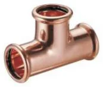
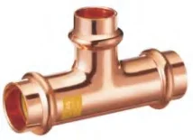
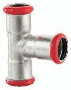
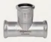
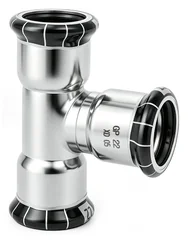

Złączki zaciskane press Besco
Miedziane systemy press (złączki zaprasowywane) w profilach V i M, serie do gazu, press ze stali węglowej i nierdzewnej (INOX 304 i 316L) oraz zawory kulowe. Miedź według EN 1254-7.
- Indeksy
- 1 583
- Średnice
- 12–168,3 mm
- Producent
- Besco


Komu to sprzedasz i jak.
- Kto kupuje w Twojej hurtowni
- Firmy instalacyjne z zaciskarkami: kotłownie, piony i przyłącza w budownictwie wielorodzinnym i obiektach, instalacje gazowe.
- Argument sprzedażowy
- Profil M można zaciskać szczęką V w zakresie DN12–28, więc jeden stan magazynowy obsłuży klientów z oboma typami szczęk.
Linie w systemie
Źródło: katalogi Besco 2026 i Besco INOX| Linia | Średnice | Zastosowanie | Parametry | Indeksy | Akcja |
|---|---|---|---|---|---|
 Miedź press, profil V Besco Miedź press, profil V Besco | 12–54 mm | woda pitna, CO, przemysł | 16 bar DVGW KIWA WRAS RISE | 257 | Indeksy |
 Miedź press, profil M Besco | 12–108 mm | woda pitna, CO, przemysł | 16 bar DVGW WRAS RISE | 294 | Indeksy |
 Miedź press do gazu, V i M Besco | 15–35 mm | gaz ziemny, LPG | 5 bar DVGW INiG | 211 | Indeksy |
 Stal węglowa press, profil M Besco | 12–108 mm | CO w obiegu zamkniętym, sprężone powietrze | 16 bar | 256 | Indeksy |
 Stal nierdzewna INOX 316L press, profil M Besco | 15–168,3 mm | woda, CO, przemysł | 16 bar DVGW WRAS | 253 | Indeksy |
 Stal nierdzewna INOX 304 press, profil M Besco | 15–108 mm | ogrzewanie | 16 bar CE | 287 | Indeksy |
 Zawory kulowe press, kontur V i M Besco Zawory kulowe press, kontur V i M Besco | 15–54 mm | woda, CO | 16 bar DVGW WRAS | 25 | Indeksy |
Produkty w systemie
161 grup produktów · rozmiary, numery i opakowaniaMiedź press, profil V · woda 28 grup · 257 indeksów
 Łuk 90° wz GP5001 · 8 rozm.
Łuk 90° wz GP5001 · 8 rozm. Łuk 90° ww GP5002 · 8 rozm.
Łuk 90° ww GP5002 · 8 rozm. Łuk 45° wz GP5040 · 8 rozm.
Łuk 45° wz GP5040 · 8 rozm. Łuk 45° ww GP5041 · 8 rozm.
Łuk 45° ww GP5041 · 8 rozm. Mufa GP5270 · 8 rozm.
Mufa GP5270 · 8 rozm. Mufa przesuwna GP5270S · 8 rozm.
Mufa przesuwna GP5270S · 8 rozm. Trójnik równoprzelotowy GP5130 · 8 rozm.
Trójnik równoprzelotowy GP5130 · 8 rozm. Trójnik redukcyjny GP5130 · 41 rozm.
Trójnik redukcyjny GP5130 · 41 rozm. Mufa redukcyjna ww GP5240 · 15 rozm.
Mufa redukcyjna ww GP5240 · 15 rozm. Redukcja wz GP5243 · 19 rozm.
Redukcja wz GP5243 · 19 rozm. Zaślepka GP5301 · 8 rozm.
Zaślepka GP5301 · 8 rozm. Mijanka ww GP5085 · 4 rozm.
Mijanka ww GP5085 · 4 rozm. Mijanka wz GP5086 · 4 rozm.
Mijanka wz GP5086 · 4 rozm. Kolano 90° z GW GP4090 · 11 rozm.
Kolano 90° z GW GP4090 · 11 rozm. Kolano 90° z GZ GP4092 · 10 rozm.
Kolano 90° z GZ GP4092 · 10 rozm. Trójnik z GW GP4130 · 9 rozm.
Trójnik z GW GP4130 · 9 rozm. Złączka z GZ GP4243 · 14 rozm.
Złączka z GZ GP4243 · 14 rozm. Złączka z GW GP4270 · 15 rozm.
Złączka z GW GP4270 · 15 rozm. Złączka z GZ GP4280 · 6 rozm.
Złączka z GZ GP4280 · 6 rozm. Złączka z GW GP4281 · 7 rozm.
Złączka z GW GP4281 · 7 rozm. Śrubunek z GZ (uszczelnienie płaskie) GP4331 · 8 rozm.
Śrubunek z GZ (uszczelnienie płaskie) GP4331 · 8 rozm. Śrubunek press × press (uszczelnienie płaskie) GP4330 · 5 rozm.
Śrubunek press × press (uszczelnienie płaskie) GP4330 · 5 rozm. Śrubunek z GZ (uszczelnienie płaskie) GP4330G · 8 rozm.
Śrubunek z GZ (uszczelnienie płaskie) GP4330G · 8 rozm. Półśrubunek z GW GP4355 · 7 rozm.
Półśrubunek z GW GP4355 · 7 rozm. Kolano ścienne z GW GP4471 · 3 rozm.
Kolano ścienne z GW GP4471 · 3 rozm. Zestaw montażowy wygięty z GW GP4976 · 1 rozm.
Zestaw montażowy wygięty z GW GP4976 · 1 rozm. Zestaw montażowy prosty z GW GP4977 · 2 rozm.
Zestaw montażowy prosty z GW GP4977 · 2 rozm. Rura miedziana BT · 4 rozm.
Rura miedziana BT · 4 rozm.Miedź press, profil M · woda 28 grup · 294 indeksów
 Łuk 90° ww 6002 · 14 rozm.
Łuk 90° ww 6002 · 14 rozm. Łuk 90° wz 6001 · 11 rozm.
Łuk 90° wz 6001 · 11 rozm. Łuk 45° wz 6040 · 11 rozm.
Łuk 45° wz 6040 · 11 rozm. Łuk 45° ww 6041 · 11 rozm.
Łuk 45° ww 6041 · 11 rozm. Trójnik równoprzelotowy 6130 · 11 rozm.
Trójnik równoprzelotowy 6130 · 11 rozm. Trójnik redukcyjny 6130R · 44 rozm.
Trójnik redukcyjny 6130R · 44 rozm. Mufa redukcyjna ww 6240 · 18 rozm.
Mufa redukcyjna ww 6240 · 18 rozm. Redukcja wz 6243 · 28 rozm.
Redukcja wz 6243 · 28 rozm. Mufa 6270 · 11 rozm.
Mufa 6270 · 11 rozm. Mufa przesuwna 6271 · 8 rozm.
Mufa przesuwna 6271 · 8 rozm. Zaślepka 6301 · 10 rozm.
Zaślepka 6301 · 10 rozm. Półśrubunek kątowy 90° C6002G · 1 rozm.
Półśrubunek kątowy 90° C6002G · 1 rozm. Półśrubunek z GW C6359G · 1 rozm.
Półśrubunek z GW C6359G · 1 rozm. Mijanka ww 6085 · 4 rozm.
Mijanka ww 6085 · 4 rozm. Mijanka wz 6086 · 4 rozm.
Mijanka wz 6086 · 4 rozm. Kołnierz z końcówką press PN 16 6510 · 4 rozm.
Kołnierz z końcówką press PN 16 6510 · 4 rozm. Kolano 90° z GW 6090G · 5 rozm.
Kolano 90° z GW 6090G · 5 rozm. Kolano 90° z GZ 6092G · 5 rozm.
Kolano 90° z GZ 6092G · 5 rozm. Kolano ścienne z GW 6472G · 2 rozm.
Kolano ścienne z GW 6472G · 2 rozm. Złączka z GW 6270G · 16 rozm.
Złączka z GW 6270G · 16 rozm. Złączka z GZ 6243G · 20 rozm.
Złączka z GZ 6243G · 20 rozm. Trójnik z GW 6130G · 18 rozm.
Trójnik z GW 6130G · 18 rozm. Półśrubunek z GW 6359G · 6 rozm.
Półśrubunek z GW 6359G · 6 rozm. Śrubunek z GZ (uszczelnienie płaskie) 6331G · 6 rozm.
Śrubunek z GZ (uszczelnienie płaskie) 6331G · 6 rozm. Śrubunek z GW (uszczelnienie płaskie) 6330G · 6 rozm.
Śrubunek z GW (uszczelnienie płaskie) 6330G · 6 rozm. Śrubunek press × press (uszczelnienie płaskie) 6330 · 6 rozm.
Śrubunek press × press (uszczelnienie płaskie) 6330 · 6 rozm. Złączka z GW 6281 · 7 rozm.
Złączka z GW 6281 · 7 rozm. Złączka z GZ 6280 · 6 rozm.
Złączka z GZ 6280 · 6 rozm.Miedź press, profil V · gaz 16 grup · 110 indeksów
 Łuk 90° wz GPG5001 · 5 rozm.
Łuk 90° wz GPG5001 · 5 rozm. Łuk 90° ww GPG5002 · 5 rozm.
Łuk 90° ww GPG5002 · 5 rozm. Łuk 45° wz GPG5040 · 5 rozm.
Łuk 45° wz GPG5040 · 5 rozm. Łuk 45° ww GPG5041 · 5 rozm.
Łuk 45° ww GPG5041 · 5 rozm. Trójnik równoprzelotowy GPG5130 · 5 rozm.
Trójnik równoprzelotowy GPG5130 · 5 rozm. Trójnik redukcyjny GPG5130 · 12 rozm.
Trójnik redukcyjny GPG5130 · 12 rozm. Mufa redukcyjna ww GPG5240 · 8 rozm.
Mufa redukcyjna ww GPG5240 · 8 rozm. Redukcja wz GPG5243 · 8 rozm.
Redukcja wz GPG5243 · 8 rozm. Mufa GPG5270 · 5 rozm.
Mufa GPG5270 · 5 rozm. Zaślepka GPG5301 · 5 rozm.
Zaślepka GPG5301 · 5 rozm. Kolano 90° z GW GPG4090 · 7 rozm.
Kolano 90° z GW GPG4090 · 7 rozm. Kolano 90° z GZ GPG4092 · 6 rozm.
Kolano 90° z GZ GPG4092 · 6 rozm. Trójnik z GW GPG4130 · 7 rozm.
Trójnik z GW GPG4130 · 7 rozm. Kolano ścienne z GW GPG4471 · 3 rozm.
Kolano ścienne z GW GPG4471 · 3 rozm. Złączka z GZ GPG4243 · 12 rozm.
Złączka z GZ GPG4243 · 12 rozm. Złączka z GW GPG4270 · 12 rozm.
Złączka z GW GPG4270 · 12 rozm.Miedź press, profil M · gaz 15 grup · 101 indeksów
 Łuk 90° wz 7001 · 5 rozm.
Łuk 90° wz 7001 · 5 rozm. Łuk 90° ww 7002 · 5 rozm.
Łuk 90° ww 7002 · 5 rozm. Łuk 45° wz 7040 · 5 rozm.
Łuk 45° wz 7040 · 5 rozm. Łuk 45° ww 7041 · 5 rozm.
Łuk 45° ww 7041 · 5 rozm. Trójnik równoprzelotowy 7130 · 5 rozm.
Trójnik równoprzelotowy 7130 · 5 rozm. Trójnik redukcyjny 7130R · 10 rozm.
Trójnik redukcyjny 7130R · 10 rozm. Redukcja wz 7243 · 7 rozm.
Redukcja wz 7243 · 7 rozm. Mufa 7270 · 5 rozm.
Mufa 7270 · 5 rozm. Zaślepka 7301 · 5 rozm.
Zaślepka 7301 · 5 rozm. Kolano 90° z GW 7090 · 5 rozm.
Kolano 90° z GW 7090 · 5 rozm. Kolano 90° z GZ 7092 · 5 rozm.
Kolano 90° z GZ 7092 · 5 rozm. Trójnik z GW 7130 · 10 rozm.
Trójnik z GW 7130 · 10 rozm. Złączka z GZ 7243 · 13 rozm.
Złączka z GZ 7243 · 13 rozm. Złączka z GW 7270 · 13 rozm.
Złączka z GW 7270 · 13 rozm. Kolano ścienne z GW 7472 · 3 rozm.
Kolano ścienne z GW 7472 · 3 rozm.Stal węglowa press, profil M 22 grup · 256 indeksów
 Mufa 2270 · 12 rozm.
Mufa 2270 · 12 rozm. Złączka z GZ 2243G · 18 rozm.
Złączka z GZ 2243G · 18 rozm. Złączka z GW 2270G · 13 rozm.
Złączka z GW 2270G · 13 rozm. Mufa redukcyjna ww 2240 · 8 rozm.
Mufa redukcyjna ww 2240 · 8 rozm. Mufa przesuwna 2271 · 11 rozm.
Mufa przesuwna 2271 · 11 rozm. Półśrubunek z GW 2359G · 5 rozm.
Półśrubunek z GW 2359G · 5 rozm. Śrubunek z GZ 2331G · 7 rozm.
Śrubunek z GZ 2331G · 7 rozm. Łuk 90° ww 2002 · 12 rozm.
Łuk 90° ww 2002 · 12 rozm. Łuk 90° wz 2001 · 12 rozm.
Łuk 90° wz 2001 · 12 rozm. Łuk 45° ww 2041 · 12 rozm.
Łuk 45° ww 2041 · 12 rozm. Łuk 45° wz 2040 · 12 rozm.
Łuk 45° wz 2040 · 12 rozm. Łuk 90° z GZ 2001G · 8 rozm.
Łuk 90° z GZ 2001G · 8 rozm. Łuk 90° z GW 2002G · 5 rozm.
Łuk 90° z GW 2002G · 5 rozm. Zaślepka 2301 · 8 rozm.
Zaślepka 2301 · 8 rozm. Redukcja wz 2243 · 26 rozm.
Redukcja wz 2243 · 26 rozm. Trójnik równoprzelotowy 2130 · 12 rozm.
Trójnik równoprzelotowy 2130 · 12 rozm. Trójnik redukcyjny 2130R · 42 rozm.
Trójnik redukcyjny 2130R · 42 rozm. Trójnik z GW 2130G · 17 rozm.
Trójnik z GW 2130G · 17 rozm. Kolano 90° z GZ 2090G · 5 rozm.
Kolano 90° z GZ 2090G · 5 rozm. Złączka z GZ 2280 · 3 rozm.
Złączka z GZ 2280 · 3 rozm. Złączka z GW 2281 · 4 rozm.
Złączka z GW 2281 · 4 rozm. Kołnierz z końcówką press PN 16 2510 · 4 rozm.
Kołnierz z końcówką press PN 16 2510 · 4 rozm.Stal nierdzewna INOX 304 press, profil M 25 grup · 287 indeksów
 Mufa 3270 · 11 rozm.
Mufa 3270 · 11 rozm. Mufa przesuwna 3271 · 11 rozm.
Mufa przesuwna 3271 · 11 rozm. Łuk 90° ww 3002 · 11 rozm.
Łuk 90° ww 3002 · 11 rozm. Łuk 90° wz 3001 · 11 rozm.
Łuk 90° wz 3001 · 11 rozm. Łuk 45° ww 3041 · 11 rozm.
Łuk 45° ww 3041 · 11 rozm. Łuk 45° wz 3040 · 11 rozm.
Łuk 45° wz 3040 · 11 rozm. Mufa redukcyjna ww 3240 · 6 rozm.
Mufa redukcyjna ww 3240 · 6 rozm. Redukcja wz 3243 · 30 rozm.
Redukcja wz 3243 · 30 rozm. Trójnik równoprzelotowy 3130 · 11 rozm.
Trójnik równoprzelotowy 3130 · 11 rozm. Trójnik redukcyjny 3130R · 37 rozm.
Trójnik redukcyjny 3130R · 37 rozm. Zaślepka 3301 · 11 rozm.
Zaślepka 3301 · 11 rozm. Łuk 90° zz 3030 · 7 rozm.
Łuk 90° zz 3030 · 7 rozm. Mijanka zz 3085 · 4 rozm.
Mijanka zz 3085 · 4 rozm. Mijanka wz 3086 · 4 rozm.
Mijanka wz 3086 · 4 rozm. Kolano 90° z GW 3002G · 6 rozm.
Kolano 90° z GW 3002G · 6 rozm. Kolano 90° z GZ 3001G · 7 rozm.
Kolano 90° z GZ 3001G · 7 rozm. Kolano ścienne z GW 3472G · 4 rozm.
Kolano ścienne z GW 3472G · 4 rozm. Złączka z GW 3270G · 17 rozm.
Złączka z GW 3270G · 17 rozm. Złączka z GZ 3243G · 22 rozm.
Złączka z GZ 3243G · 22 rozm. Trójnik z GW 3130G · 16 rozm.
Trójnik z GW 3130G · 16 rozm. Półśrubunek z GW 3358G · 11 rozm.
Półśrubunek z GW 3358G · 11 rozm. Śrubunek z GZ 3331G · 7 rozm.
Śrubunek z GZ 3331G · 7 rozm. Złączka z GZ 3280 · 6 rozm.
Złączka z GZ 3280 · 6 rozm. Złączka z GW 3281 · 7 rozm.
Złączka z GW 3281 · 7 rozm. Kołnierz z końcówką press PN 16 3510 · 8 rozm.
Kołnierz z końcówką press PN 16 3510 · 8 rozm.Stal nierdzewna INOX 316L press, profil M 23 grup · 253 indeksów
 Mufa 12000 · 12 rozm.
Mufa 12000 · 12 rozm. Mufa przesuwna 12040 · 11 rozm.
Mufa przesuwna 12040 · 11 rozm. Łuk 90° ww 12200 · 12 rozm.
Łuk 90° ww 12200 · 12 rozm. Łuk 90° wz 12210 · 11 rozm.
Łuk 90° wz 12210 · 11 rozm. Łuk 45° ww 12230 · 12 rozm.
Łuk 45° ww 12230 · 12 rozm. Łuk 45° wz 12240 · 11 rozm.
Łuk 45° wz 12240 · 11 rozm. Redukcja wz 12430 · 29 rozm.
Redukcja wz 12430 · 29 rozm. Trójnik równoprzelotowy 12100 · 12 rozm.
Trójnik równoprzelotowy 12100 · 12 rozm. Trójnik redukcyjny 12110 · 32 rozm.
Trójnik redukcyjny 12110 · 32 rozm. Zaślepka 12410 · 11 rozm.
Zaślepka 12410 · 11 rozm. Łuk 90° zz 12350 · 7 rozm.
Łuk 90° zz 12350 · 7 rozm. Mijanka zz 12360 · 4 rozm.
Mijanka zz 12360 · 4 rozm. Kolano 90° z GW 12320 · 5 rozm.
Kolano 90° z GW 12320 · 5 rozm. Kolano 90° z GZ 12310 · 7 rozm.
Kolano 90° z GZ 12310 · 7 rozm. Kolano ścienne z GW 12340 · 3 rozm.
Kolano ścienne z GW 12340 · 3 rozm. Złączka z GW 12020 · 13 rozm.
Złączka z GW 12020 · 13 rozm. Złączka z GZ 12010 · 19 rozm.
Złączka z GZ 12010 · 19 rozm. Trójnik z GW 12120 · 16 rozm.
Trójnik z GW 12120 · 16 rozm. Półśrubunek z GW 12070 · 6 rozm.
Półśrubunek z GW 12070 · 6 rozm. Śrubunek z GZ 12080 · 7 rozm.
Śrubunek z GZ 12080 · 7 rozm. Złączka z GZ 12450 · 2 rozm.
Złączka z GZ 12450 · 2 rozm. Złączka z GW 12460 · 3 rozm.
Złączka z GW 12460 · 3 rozm. Kołnierz z końcówką press PN 16 12400 · 8 rozm.
Kołnierz z końcówką press PN 16 12400 · 8 rozm.


Co warto wiedzieć.
Odpowiedzi według dokumentacji producenta. Resztę wyjaśni handlowiec.
Zadzwoń: 513 191 502Czym różni się profil V od M?
To kształt końcówki press i szczęki zaciskarki. Miedź Besco jest w obu profilach (V 12–54 mm, M 12–108 mm), stal węglowa w profilu M. Złączki w profilu M można zaciskać także szczęką V w zakresie DN12–28.
Które złączki nadają się do gazu?
Linie GP Gas w profilu V i M: średnice 15–35 mm, do 5 bar, od −20 do 70 °C, norma EN 1254-7, atesty DVGW i INiG. Do instalacji gazowych nie stosuje się złączek z linii wodnych.
Do czego służy stal węglowa press?
Do zamkniętych instalacji grzewczych i sprężonego powietrza. Profil M, średnice 12–108 mm, do 16 bar, od −10 do 110 °C.
Czym różni się INOX 304 od INOX 316L?
Obie linie to złączki press ze stali nierdzewnej w profilu M, do 16 bar, od −10 do 110 °C. Według katalogów Besco INOX 316L jest przeznaczony do wody, ogrzewania i przemysłu, ma aprobaty DVGW i WRAS oraz średnice 15–168,3 mm. INOX 304 producent opisuje do ogrzewania, ze znakiem CE, w średnicach 15–108 mm.
Jakie aprobaty mają złączki miedziane press?
Profil V: DVGW, KIWA, WRAS i RISE. Profil M: DVGW, WRAS i RISE. Linie gazowe: DVGW i INiG. Wszystkie według EN 1254-7.
Jakie zawory kulowe są w systemie?
Zawory kulowe press × press i press × GW w konturach V i M, 15–54 mm, także z przedłużonym trzpieniem. Do 16 bar, od −10 do 110 °C, aprobaty DVGW i WRAS.
Zapytaj o wycenę na złączki zaciskane Besco.
Ceny hurtowe, dostępność i terminy dostaw przygotujemy w ciągu jednego dnia roboczego.
Pozostałe systemy
Wszystkie systemy 02 · Pegler Yorkshire
02 · Pegler YorkshireZłączki na wcisk
Tectite Classic, Pro, 316 i Carbon oraz zawory na wcisk. Montaż bez narzędzi i ognia.
ok. 530 indeksów · 10–54 mm Zobacz → 03 · Pegler Yorkshire
03 · Pegler YorkshireZłączki skręcane
Kuterlite K600 i K900 Pro do miedzi, K700 do rur PE oraz zawory z końcówkami zaciskowymi.
ok. 470 indeksów · 6–54 mm Zobacz → 04 · Besco
04 · BescoZłączki lutowane
Kształtki EN 1254 serii 4000 i 5000, calowe ANSI B16.22 i G-size do 80 bar.
893 indeksy · 6–108 mm Zobacz →